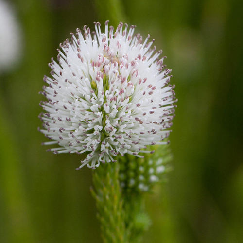

Stilbaceae
Stilbaceae is a small family of shrubs and subshrubs belonging to the order Lamiales within the Asterid clade. The family is primarily centered in the Cape Floristic Region of South Africa, with members often exhibiting an ericoid (heath-like) appearance. They typically have small, opposite or whorled leaves, flowers with tubular corollas aggregated into dense spikes or heads, and capsular fruits.
Overview
Stilbaceae is a relatively small family within the large and diverse order Lamiales, which belongs to the Lamiid clade of Asterids. The family comprises about 7 genera and 15-20 species of shrubs and subshrubs. Its distribution is strongly centered in the Cape Floristic Region of South Africa, a global biodiversity hotspot known for its unique fynbos vegetation, although one genus (Nuxia) extends into tropical Africa and Arabia.
Many members of Stilbaceae exhibit an ericoid habit, characterized by small, often needle-like or scale-like leaves crowded on the stems, resembling heaths (Erica species). This is considered an adaptation to the nutrient-poor, fire-prone environments of the fynbos. The family is characterized by flowers with fused petals forming a distinct tube, typically aggregated into dense terminal spikes or heads. Phylogenetically, it is considered closely related to families like Scrophulariaceae sensu stricto within the Lamiales.
While not economically prominent, Stilbaceae contributes to the unique botanical diversity of the Cape region and holds interest for understanding plant adaptations and relationships within the Lamiales order.
Quick Facts
- Scientific Name: Stilbaceae
- Common Name: (None widely accepted)
- Number of Genera: Approximately 7
- Number of Species: Approximately 15-20
- Distribution: Primarily South Africa (Cape Floristic Region); one genus extends to tropical Africa/Arabia.
- Evolutionary Group: Eudicots - Asterids - Lamiids - Lamiales
Key Characteristics
Growth Form and Habit
Members are typically shrubs or subshrubs, often exhibiting an ericoid (heath-like) appearance with small, crowded leaves. They are adapted to nutrient-poor soils and often fire-prone fynbos vegetation.
Leaves
Leaves are usually arranged oppositely or in whorls of 3 or more. They are simple, small, often linear or needle-like (ericoid), leathery, with entire (smooth) margins that may be rolled inwards (revolute). Stipules are absent (exstipulate).
Inflorescence
Flowers are typically aggregated into dense terminal spikes or heads, though sometimes racemes or solitary flowers occur. Inflorescences are often subtended by conspicuous, sometimes colorful, bracts.
Flowers
Flowers are small to medium-sized, usually radially symmetrical (actinomorphic), but sometimes slightly bilaterally symmetrical (zygomorphic). They are bisexual (perfect). Key floral features include:
- Calyx: Consists of 5 (sometimes 4 or 6) sepals fused (synsepalous) into a tube, often ribbed or angled, with distinct lobes. The calyx is persistent in fruit.
- Corolla: Consists of 5 (sometimes 4 or 6) petals fused (sympetalous) into a distinct, often slender, tube with spreading lobes at the mouth. Corolla color varies (white, pink, purple, yellow).
- Androecium: Stamens are typically present in the same number as the corolla lobes (usually 5 or 4) and alternate with them. They are attached to the corolla tube (epipetalous), often near the mouth or within the tube. Filaments are distinct; anthers typically open via longitudinal slits.
- Gynoecium: The pistil consists of 2 fused carpels (syncarpous). The ovary is positioned superiorly and is typically divided into 2 chambers (bilocular), each containing one to several ovules on axile placentas. A single terminal style ends in a simple or slightly 2-lobed stigma. A nectar disc is often present at the base of the ovary.
Fruits and Seeds
The fruit is typically a dry capsule, usually dehiscing loculicidally (splitting into the locules) or sometimes septicidally. The capsule contains few seeds.
Chemical Characteristics
Plants in the family may contain iridoid compounds, which are common chemical markers within the Lamiales order.
Field Identification
Identifying members of Stilbaceae involves recognizing their characteristic heath-like habit, leaf arrangement, dense inflorescences, and specific floral structure, particularly within the South African Cape flora:
Primary Identification Features
- Habit & Location: Look for ericoid (heath-like) shrubs or subshrubs primarily in the Cape Floristic Region of South Africa (fynbos vegetation).
- Leaves: Identify the small, often linear or needle-like, simple, entire leaves arranged oppositely or in whorls. Leaves are exstipulate.
- Inflorescence: Flowers are typically densely clustered in terminal spikes or heads, often with noticeable bracts.
- Flowers: Small to medium, usually radially symmetric, with a distinct tubular corolla (usually 5 or 4 lobes) and stamens equal in number to corolla lobes (usually 5 or 4), attached to the corolla tube.
- Ovary: Superior, composed of 2 fused carpels.
- Fruit: A dry capsule.
Secondary Identification Features
- Calyx: Fused, tubular, persistent.
- Stamens: Epipetalous.
- Placentation: Axile.
Seasonal Identification Tips
- Year-round: The evergreen, ericoid shrub habit and leaf arrangement are constant features.
- Flowering Season: Dense spikes or heads of tubular flowers are conspicuous during flowering, which often occurs after fires or during specific seasons in the fynbos biome.
- Fruiting: Dry capsules may persist after flowering.
Common Confusion Points (in Cape Flora)
- Ericaceae (Heath family): Abundant ericoid shrubs in fynbos. Differ in often having alternate leaves, typically urn-shaped/bell-shaped corollas, usually twice as many stamens as petals (e.g., 8 or 10) which often have pores/appendages.
- Restionaceae (Cape Reeds): Form dense, rush-like or heath-like clumps. Are monocots with highly reduced, wind-pollinated flowers lacking petals/sepals, enclosed in bracts.
- Asteraceae (Aster family): Some fynbos shrubs are ericoid (e.g., Metalasia). Distinguished by having composite flower heads (capitula) and fruit an achene with pappus.
- Other Lamiales (e.g., some Lamiaceae, Scrophulariaceae): While related, they usually lack the dense ericoid habit and whorled leaves, often have strongly bilabiate flowers, and may have different fruit types (nutlets).
Field Guide Quick Reference
Look For:
- Ericoid shrub (heath-like)
- Mainly South Africa (Cape)
- Leaves small, simple, opposite or whorled
- Inflorescence a dense spike or head
- Flowers with tubular corolla (5 or 4 lobes)
- Stamens 5 or 4, epipetalous
- Ovary superior, 2 carpels
- Fruit a capsule
Key Distinctions:
- Stamens = petals (vs. 2x in Ericaceae)
- Opposite/whorled leaves (vs. often alternate in Ericaceae)
- Tubular corolla, often in spikes (vs. urns/bells in Ericaceae)
- Not a composite head (vs. Asteraceae)
- Capsule fruit (vs. nutlets in Lamiaceae)
Notable Examples
Genera within Stilbaceae are mostly endemic to the Cape region of South Africa:

Stilbe spp. (e.g., S. vestita)
(No common English name)
The type genus of the family, Stilbe includes several species of ericoid shrubs endemic to the fynbos of the Western Cape, South Africa. They are characterized by densely packed, whorled, needle-like leaves and terminal spikes or heads of small, tubular flowers, often white, pink, or purplish, usually with exserted stamens and styles.

Retzia capensis
(No common English name)
A distinct, monotypic genus sometimes placed in its own family but usually included in Stilbaceae. It is a shrub endemic to a small area in the Western Cape. Unlike typical Stilbe, it has larger, lanceolate leaves in whorls and relatively large, solitary or few-flowered clusters of striking orange-red tubular flowers adapted for pollination by sunbirds.

Nuxia spp. (e.g., N. floribunda)
Forest Elder, Wild Elder
This genus differs from others in the family by its wider distribution, extending from South Africa northwards into tropical Africa and Arabia, and by its habit, often growing as larger shrubs or small trees rather than strictly ericoid shrubs. Leaves are opposite or whorled, broader than in Stilbe. Flowers are small, white, tubular, and typically borne in dense, branched terminal panicles or cymes.
Phylogeny and Classification
Stilbaceae is classified within the large and diverse order Lamiales, belonging to the Lamiid clade of Asterids. This order encompasses a vast range of morphological and ecological diversity, including familiar families like Lamiaceae (mints), Verbenaceae (vervains), Oleaceae (olives), Plantaginaceae (plantains, snapdragons), Scrophulariaceae (figworts), Acanthaceae (acanthus), and Bignoniaceae (bignonias).
Within Lamiales, Stilbaceae represents a relatively small lineage. Molecular phylogenetic studies generally place it close to families like Scrophulariaceae sensu stricto and potentially Buddlejaceae (if treated separately from Scrophulariaceae). The circumscription of Stilbaceae has sometimes included genera like Halleria (now often in Scrophulariaceae) or Retzia (sometimes given its own family). Current classifications (like APG IV) typically include Retzia and Nuxia within Stilbaceae, alongside the core Cape genera like Stilbe.
Position in Plant Phylogeny
- Kingdom: Plantae
- Clade: Angiosperms (Flowering plants)
- Clade: Eudicots
- Clade: Asterids
- Clade: Lamiids
- Order: Lamiales
- Family: Stilbaceae
Evolutionary Significance
The Stilbaceae family is significant for:
- Cape Floristic Region Diversity: Represents a distinct lineage contributing to the exceptional plant diversity of the South African fynbos biome.
- Adaptation to Fynbos: The evolution of the ericoid habit (small, leathery, often whorled leaves) is a striking example of adaptation to the nutrient-poor, fire-prone conditions of the fynbos, convergent with Ericaceae.
- Lamiales Phylogeny: Its phylogenetic position helps to resolve relationships within the large Lamiales order, particularly among lineages related to Scrophulariaceae.